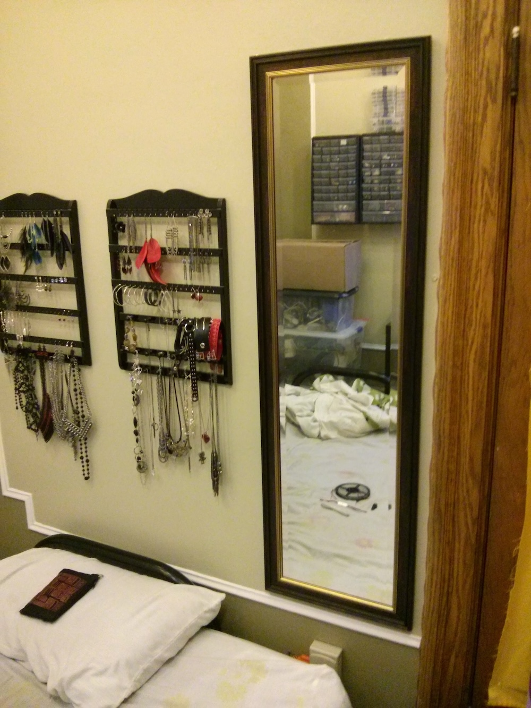
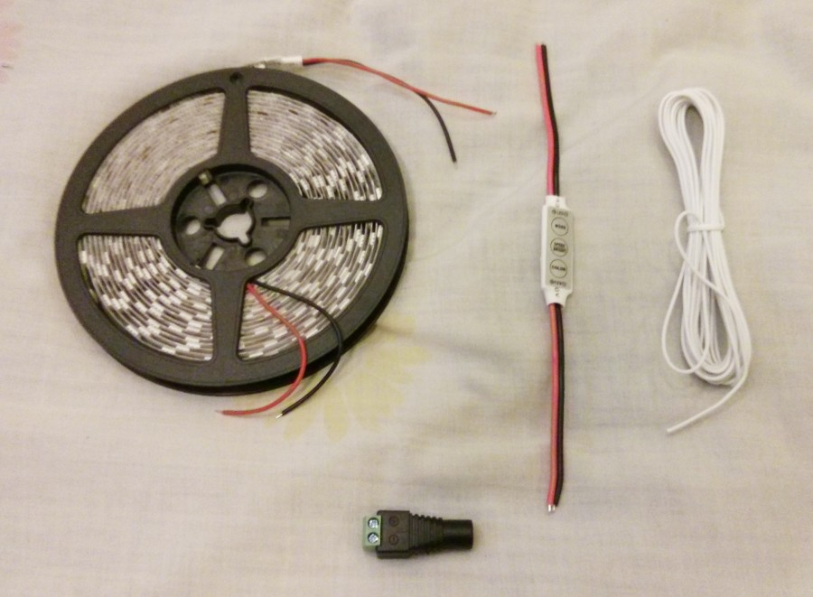
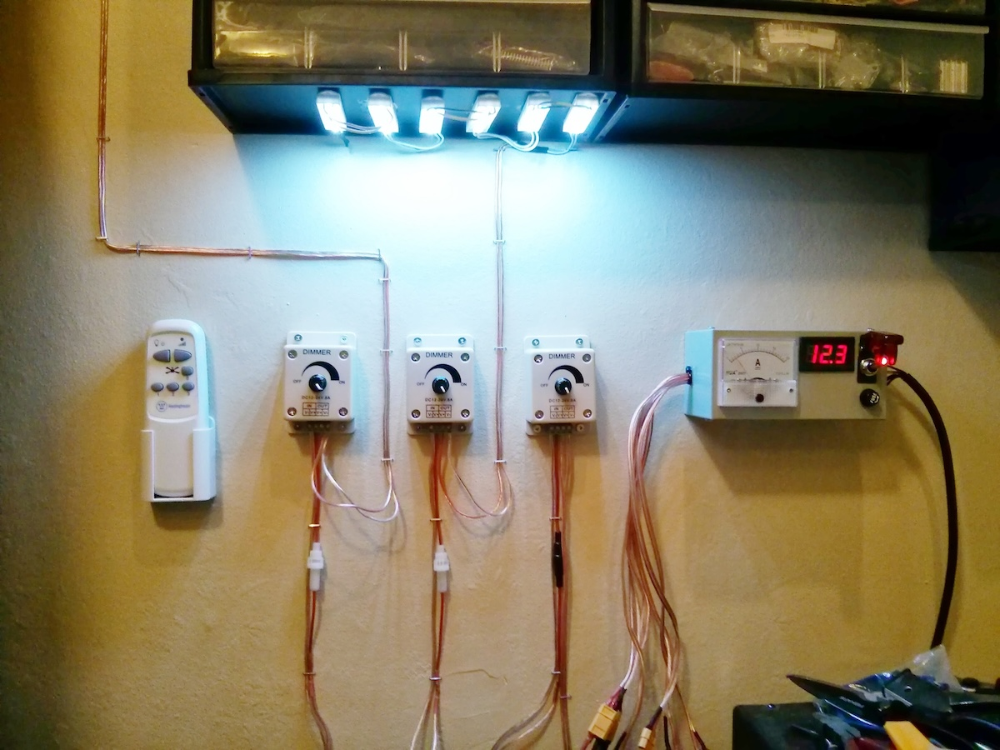
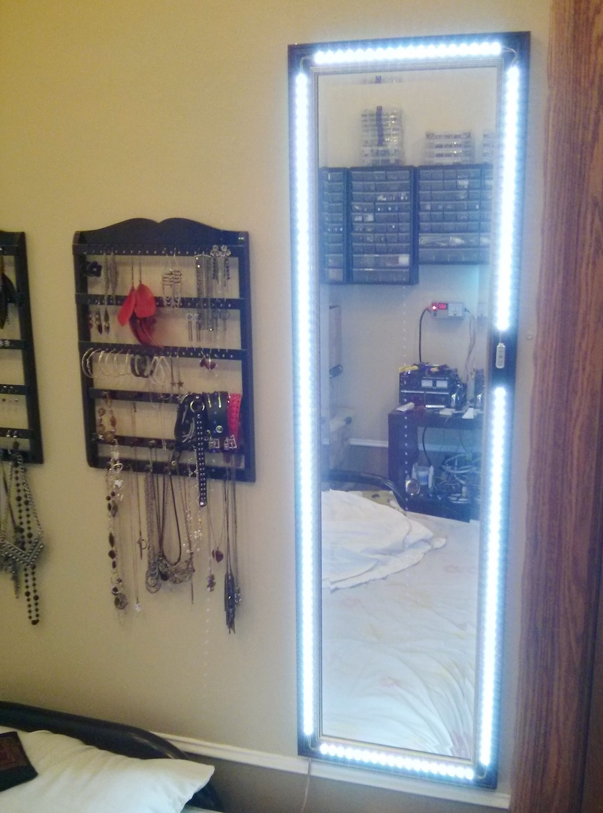

I own a small Revlon branded makeup mirror with a lightbulb and reflector inside. I find it fairly convenient as I can apply makeup while sitting at my desk and listening to music or watching videos online. Unfortunately, it has issues. It's not very bright, and so doesn't really give you an accurate image of your finished look. It also generates a fair bit of heat, which makes it uncomfortable to use in the summer. Recently, I found out that there are 12V LED light strips of many colors available on eBay for cheap (usually less than $10 for a 5 meter roll, that's about 15 feet). I figured that with a cool-white LED strip, a little dimmer switch, some wire, some glue, and a source of 12V DC power, I could turn the vertical wall mirror I own into a giant lit makeup mirror.

I acquired a 5 meter cool-white LED strip with 60 LEDs per meter. The LEDs are of the "5050" variety, which are a bit more expensive but much brighter than the alternative "3528" kind. The total cost of the strip after shipping was about $9. The dimmer I bought is a digital part, that is, it controls brightness through pulse-width modulation (PWM), and is specifically made for 12V LED systems. I found it on ebay for less than $2 shipped. The total cost of all the parts for this project, including the glue and wire and clamps, is about $30. It's important to note though that I still have leftover LED strip, glue, wire and of course the clamps to use on other projects.
Once the strip segments were glues down, I soldered wires in the corners of the mirror, connecting the strips to each other, and also to the dimmer. I applied epoxy glue over the connections to solidify and insulate them. I also added a long wire at the back of the mirror, which goes from the dimmer's input to a female DC power jack, the kind one would connect to a typical wall-wart power adapter.

Assembly was more time-consuming than I expected, it took me about 4 total hours of work, and was done over 3 days, since I needed to leave time for the glue to solidify. I started by drilling a hole on the side so I could make the power input wires of the dimmer go to the back of the mirror, I then glued the dimmer over this hole. The second step was cutting the LED strips to length. These can only be cut every 3 LEDs, and so it wasn't possible to make them go exactly all around the mirror, covering the whole perimeter, I needed to leave gaps, and connect the multiple pieces of strips with wire.
The LED strips found on eBay have an "auto-adhesive" backing, you're supposed to be able to just peel off the protective tape, and stick them to things. In my experience, this adhesive backing is very much worthless, the strips will peel off immediately, and so some other kind of glue is needed. I decided to go with epoxy, which is sold at the dollar stores here. I also purchased two adjustable clamps to hold the strips in place while the epoxy solidifies. Epoxy glues have several advantages: they solidify quickly, the resin they form is extremely solid, and they are not electrically conductive. In my experience, epoxy can solidify in as little as 15-20 minutes.

The total power consumption for the mirror, when on maximum brightness, is less than two amps. I hooked it to the 12V 15A DC power distribution box I already built for other LED lighting shenanigans. Your bedroom probably doesn't come with one of these, but fortunately you can get by with a good old 12V 2A DC wall-wart, which you can find on eBay for about $5 shipped. Just make sure to get one that fits your country's electrical outlets.

The finished product, once wired up, can put out quite a bit of light: about 3000 lumens, which is more than a 100W incandescent lightbulb. Fortunately, the dimmer allows tuning down the brightness to the point where you can look at the LEDs directly without visual discomfort. I usually just leave it on maximum brightness, however. I've found the lights are not blinding if you get up close to the mirror to look at your face. The cool-white color also seems to have a pleasant daylight-like glow. I'm actually considering buying more of this strip just to make my bedroom brighter.
{kind=link}
{kind=link}
{kind=link}
{kind=link}